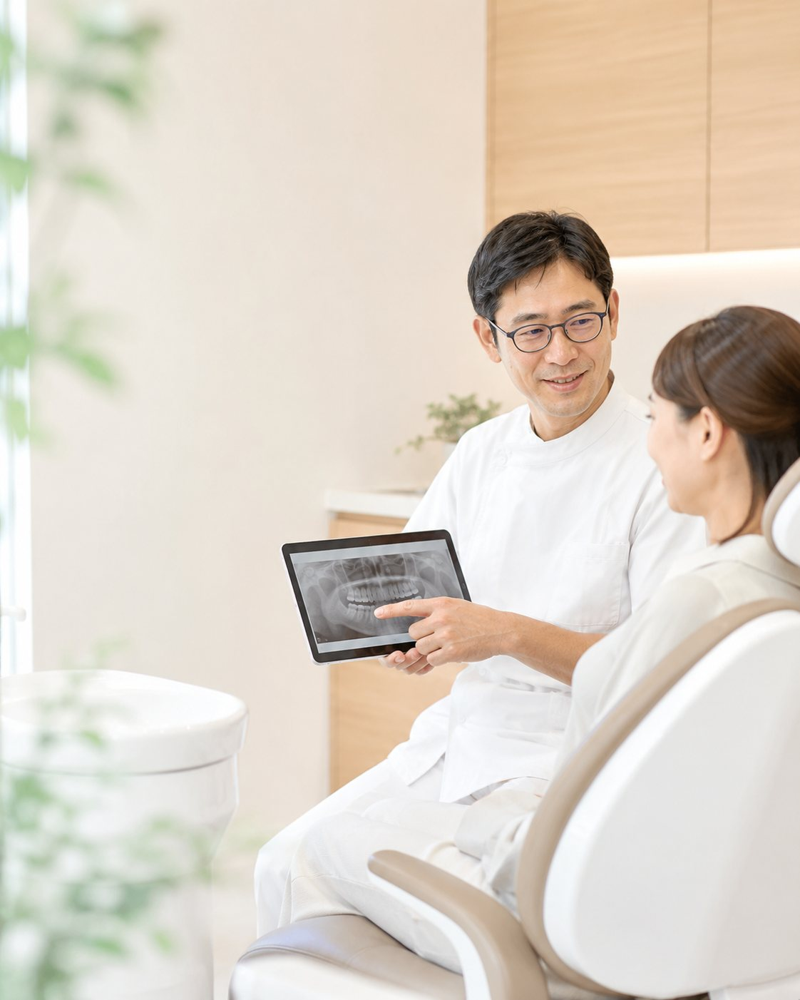
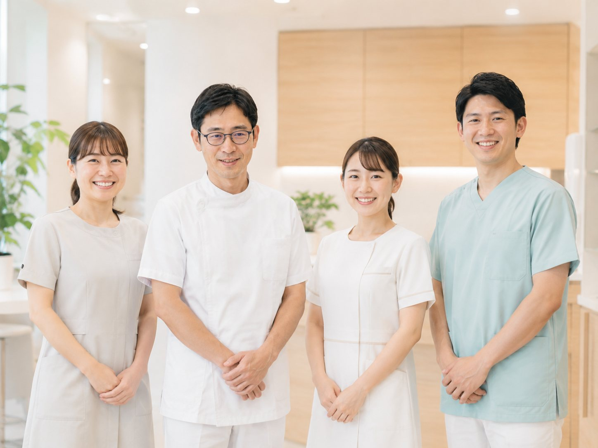
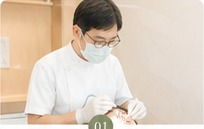
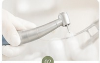
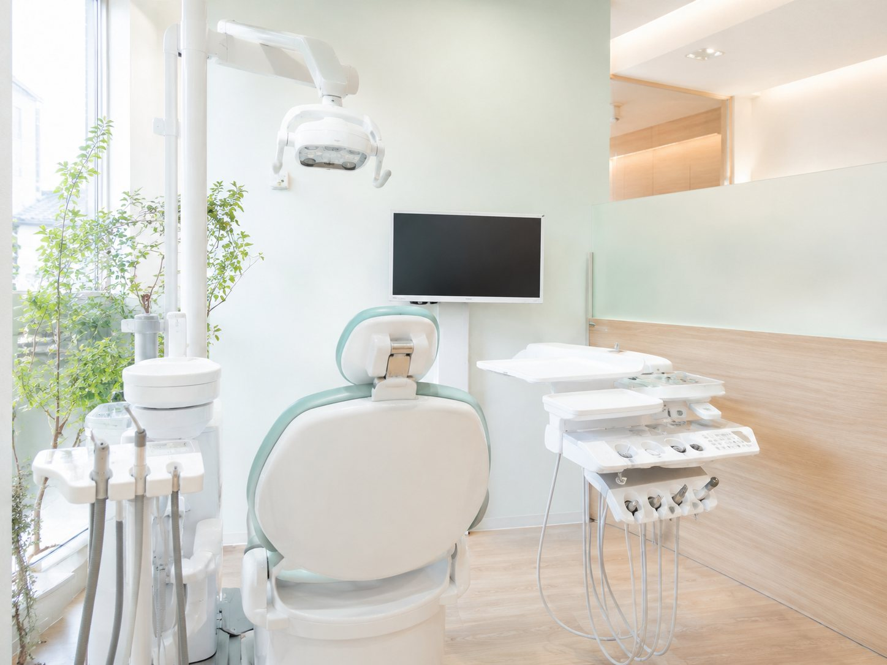
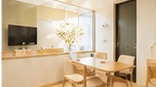

初めての方へ
不安なまま、
治療を始めないために。
当院では、丁寧な検査と分かりやすい説明を大切にしています。
しっかり検査し、
患者さまに合った治療計画をご提供
大きなモニターで説明
レントゲンやお口の写真を大きく映してご説明します。

パノラマレントゲンお口全体を一度に撮影でき、正確に把握できます。
 口腔内カメラ
口腔内カメラお口の中を撮影し、一緒に確認しながらお話します。
痛みへの配慮

表面麻酔針を刺す前に痛みをやわらげます。

細い針できるだけ細い針を使用します。
電動麻酔器
一定速度で注入し痛みを抑えます。
 診療椅子
診療椅子リラックスして治療を受けられます。
初診の流れ
予約WEBまたはお電話でご予約ください。
受付・問診保険証と問診票のご記入をお願いします。
検査お口の状態を検査し撮影を行います。
説明治療計画や費用を丁寧に説明します。
治療開始ご納得後に治療を開始します。
院内紹介


感染予防
クラスB滅菌器
ハンドピース滅菌
使い捨て製品の使用
定期的な換気・空気清浄
その他設備
バリアフリー
おむつ交換台
Wi-Fi完備
お支払い各種対応
初診時の持ち物
・保険証またはマイナンバーカード
・お薬手帳
・公費受給者証
・取れた詰め物・被せ物があれば持参
・保険証またはマイナンバーカード
・お薬手帳
・公費受給者証
・取れた詰め物・被せ物があれば持参